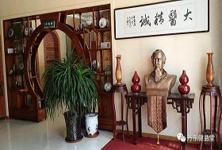

科室介绍
科室秉承了传统中医学精华，结合现代医学科技，辨证论治，运用不同手法、不同针具和现代理疗设备，对人体经络进行刺激，以疏通经络，调和阴阳，使全身气血流通，达到益气养血，防病治病的目的。 对各种骨质增生、颈椎病、腰椎间盘突出症、肌肉劳损、关节炎、肩周炎、急性扭挫伤、骨折后遗症、手术后遗症、神经衰弱、痛风、面神经瘫痪、坐骨神经痛、偏头痛、三叉神经痛、中风康复等疾病的非手术治疗见效快、费用少、效果好。科室最新引进电动腰椎、颈椎牵引床(快、慢牵)、微波治疗仪、高级电脑中频治疗仪，直流感应电治疗仪，中药导入治疗仪，TDP软红外线治疗仪，中药熏蒸等大型中西医康复仪器，等骨病患者带来了福音。
